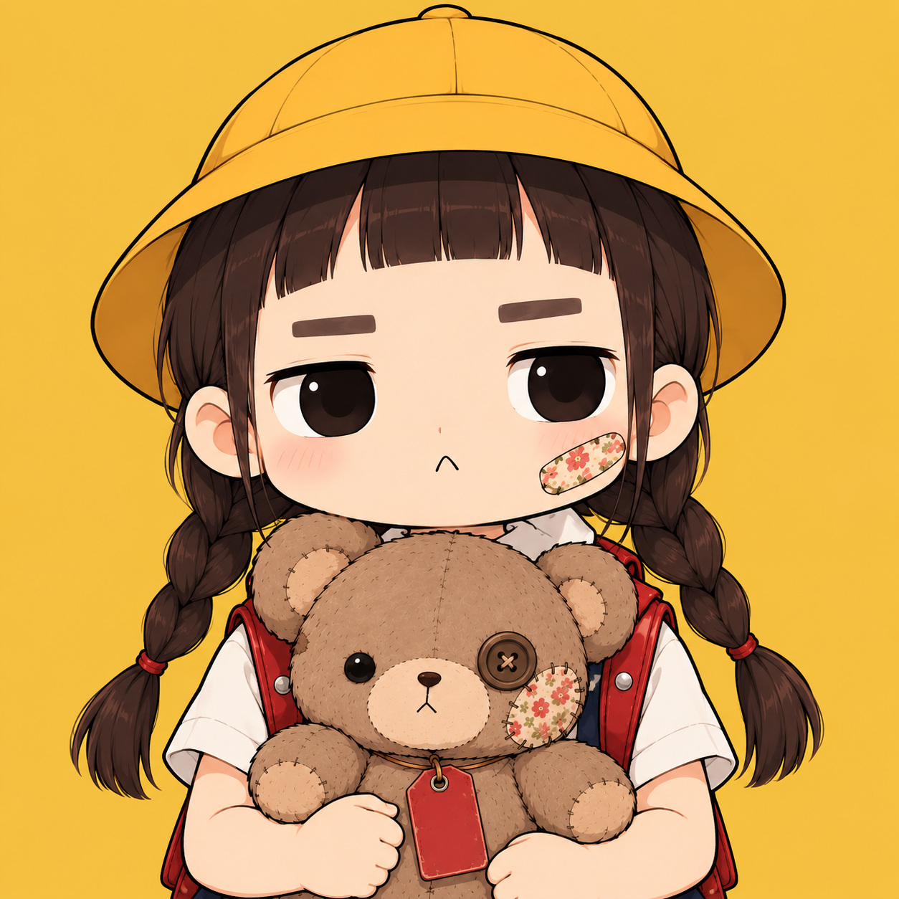
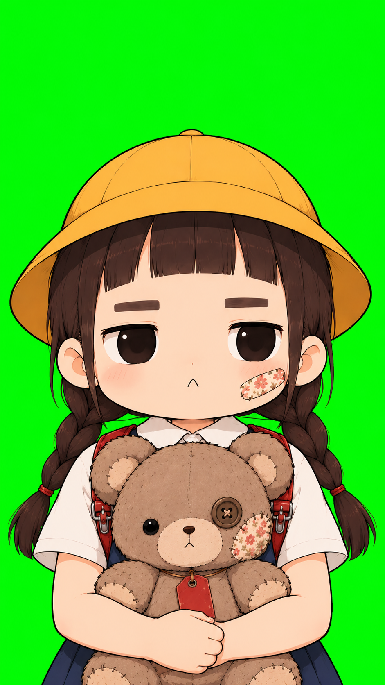
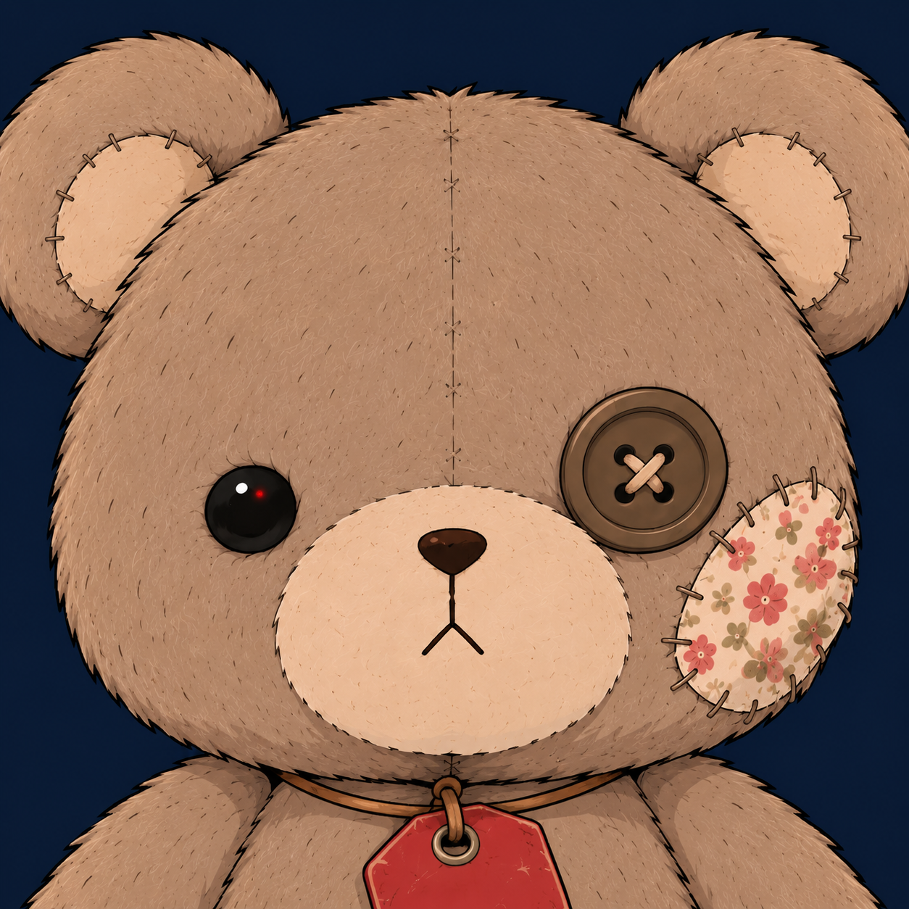
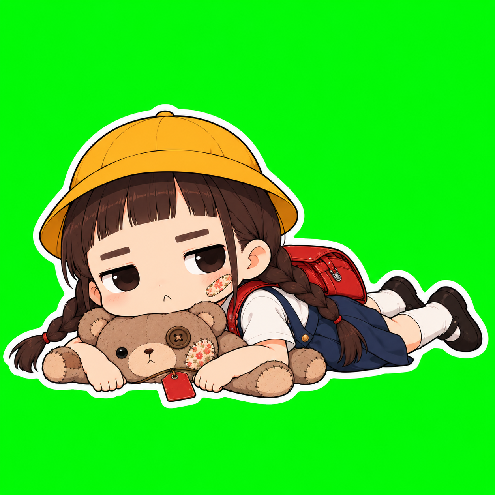
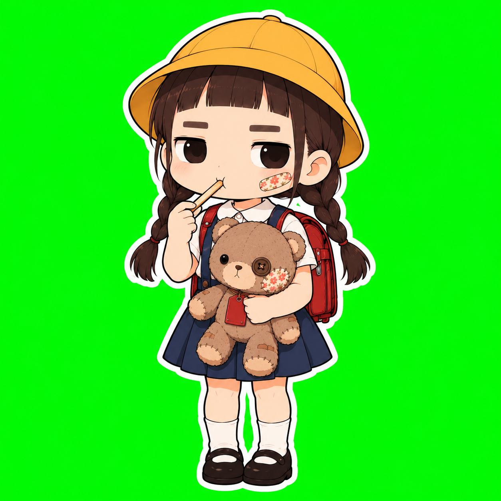

01 / KIKU
キク小学2年生・団地の4階
昼寝と駄菓子と、静かな場所が好き。
大人の嘘を見抜いて、真顔でボソッと刺す。
好きじゃない言葉は「絶対」。
WELCOME TO OUR LITTLE NEIGHBORHOOD
団地の4階に住むキクと、テディベアのハナ。
大人の「絶対」を、ゆるく、鋭く、見つめています。
押すと音楽が流れます。
ON AIR
ちょっとだけ、見ていって。
はい、解散。はそのあとで。

「それ、回したら幸せになるの？」NEIGHBORHOOD BOARD
一枚の絵、一行の皮肉。
ふたりの日常を、ここから。
MEET KIKU & HANA

昼寝と駄菓子と、静かな場所が好き。
大人の嘘を見抜いて、真顔でボソッと刺す。
好きじゃない言葉は「絶対」。

キクがいつも抱えている相棒。
しゃべらない。動かない。
だけど、毒舌の責任はいつもハナに。
TAKE US WITH YOU
おしゃべりにはスタンプを。
お気に入りには、グッズを。

LINEスタンプを見る ↗02 · OFFICIAL GOODS
SUZURIのお店へ ↗商品の販売状況は販売先で確認できます。
FIND US